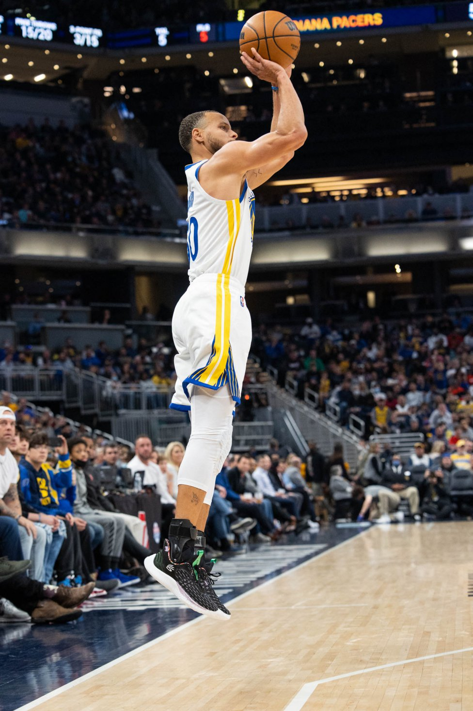

Temetrius Jamel "Ja" Morant, es un jugador de baloncesto estadounidense que pertenece a la plantilla de los Memphis Grizzlies de la NBA. Con 1,91 metros de altura juega en la posición de base. Consiguió estar entre los mejores jugadores de su estado en la escuela de secundaria Crestwood en Sumter, Carolina del Sur.
 Ir a portada
Ir a portada
 Ir a Lebron James
Ir a Lebron James
Ir a Stephen Curry
 Ir a Michael Jordan
Ir a Michael Jordan